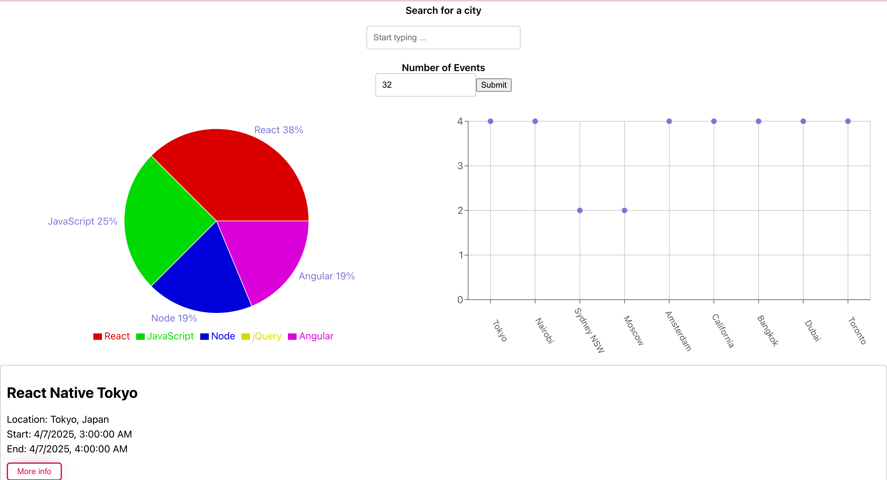

LinkUp
A serverless Progressive Web Application (PWA)
LinkUp is a serverless, progressive web application (PWA) with React using a test-driven development (TDD) technique. The application uses the Google Calendar API to fetch upcoming events.

Project Objective
The goal of LinkUp is to make an event discovery simple and accessible anytime, anywhere. Built with a Test-Driven Development (TDD) approach, the app offers features like:
- Search for events by city
- View event details and manage how many events are displayed
- Add the app to your home screen for quick access
- Interactive charts to visualize event trends by city and category
- Offline functionality - access cached events without an internet connection
Technology Behind LinkUp
- React - A fast and responsive front-end framework
- Google Calendar API - Fetching real-time event data
- AWS Lambda - A serverless backend for handling data requests
- OAuth2 - Secure authentication
- Jest and Cucumber - Ensuring quality through rigorous testing
- Service Workers - Enabling offline access
- Vercel - For deployment
- Recharts - For data visualizations
Challenges [&] Growth
Developing LinkUp my first dive into Progressive Web Apps (PWAs) and using serverless architectures. One of the biggest challenges and fun things to learn was implementing offline access to users with service workers. Knowing about service workers now and what they allow I am confident that I will be able to provide users the data they need no matter what their network conditions are.